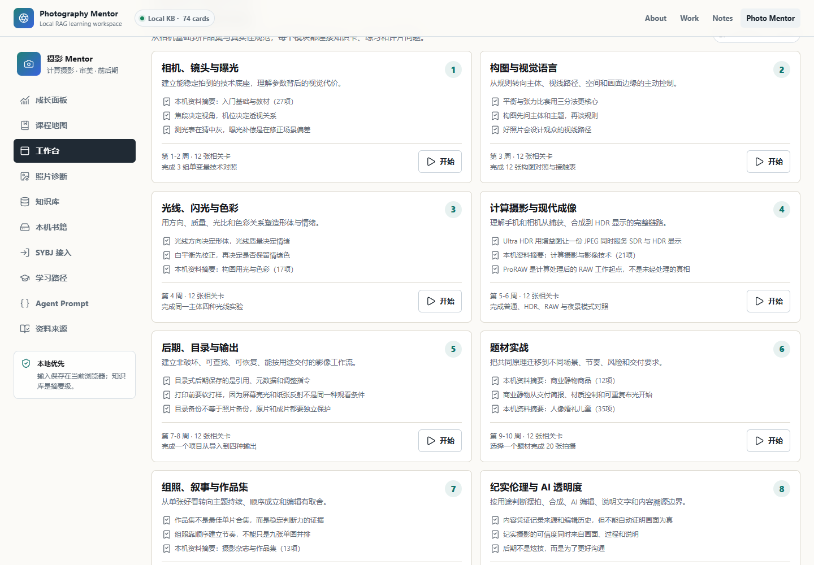

Production foundation
Vision and edge AI: training, quantization, native runtime integration, on-device debugging, and release validation.
About
I build production computer-vision systems and public agent workflow references from perception and reasoning through runtime integration, evaluation, and handoff.
My production foundation is camera and edge AI. Computational photography is the differentiated domain; reliable agent and multimodal workflows are the adjacent growth direction.
Vision and edge AI: training, quantization, native runtime integration, on-device debugging, and release validation.
Computational photography: segmentation, matting, depth, tracking, rendering, and visual-quality evaluation.
Agentic and multimodal AI: explicit state, provider-neutral routing, validated outputs, failure handling, traces, and evaluation.
Two inspectable artifacts: one visual product and one tested reliability reference.

Public application
A browser-local learning system combining deterministic image diagnostics, retrieval, practice planning, review state, and an inspectable evidence path.
01 routing primary selected 02 generation primary started 03 generation primary exhausted 04 routing fallback selected 05 validation fallback passed 06 review_gate fallback passed 07 completion fallback accepted
Public reference code
A provider-neutral Python reference for retries, fallback, validated output contracts, confidence gates, deterministic traces, and hard-case evaluation.
Build and diagnose visual signals across segmentation, matting, depth, detection, tracking, and multimodal inputs.
Turn model outputs and product intent into explicit state, rules, prompts, schemas, and controllable workflows.
Connect models to C++/Android, GPU pipelines, services, APIs, provider routing, and deployment constraints.
Make quality inspectable through hard cases, comparison reports, traces, failure taxonomies, and release gates.
Package assumptions, interfaces, debug paths, acceptance criteria, and operating knowledge for the next team.